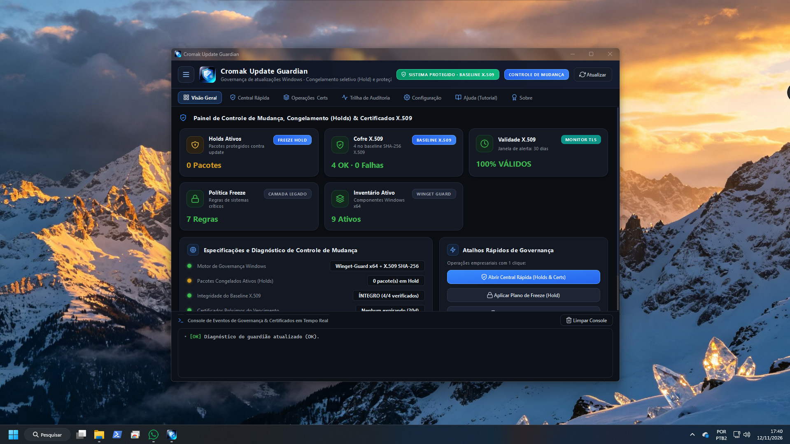
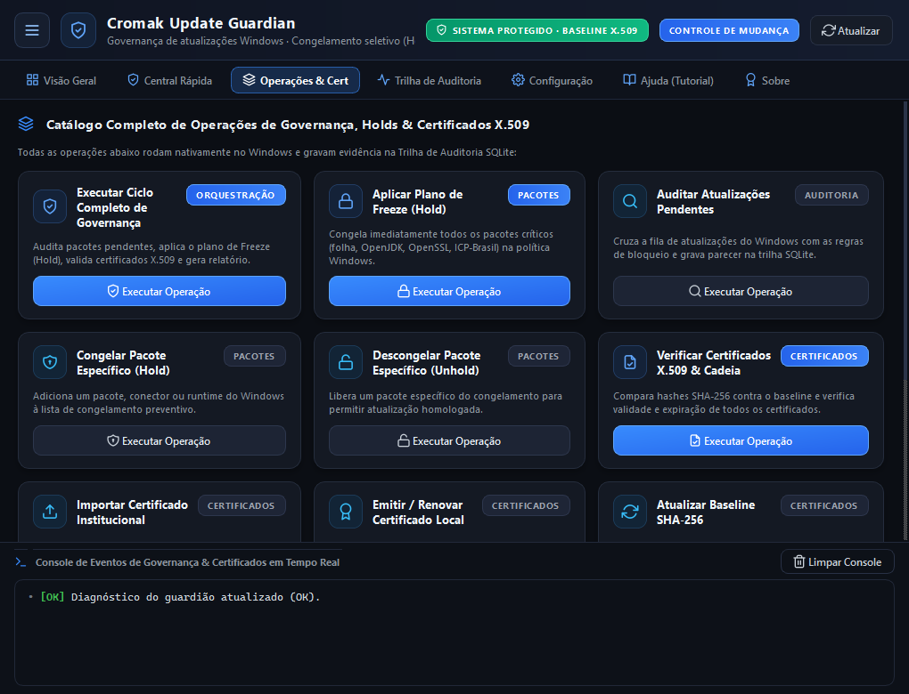
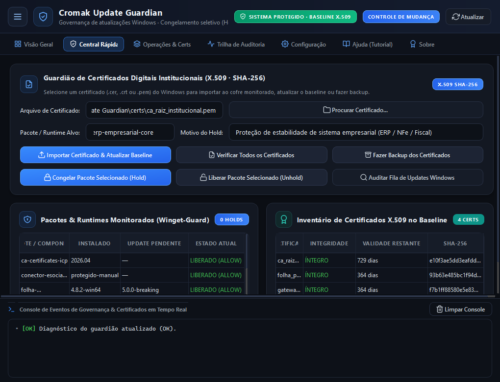
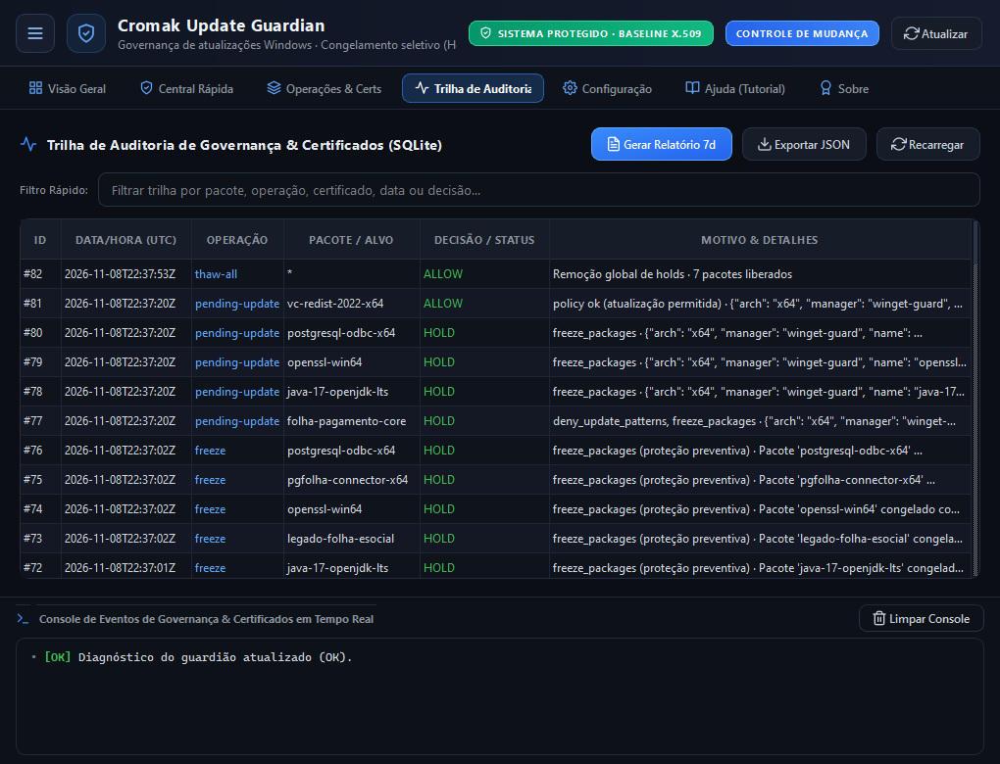
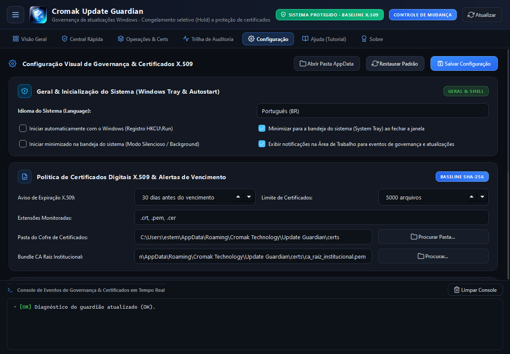
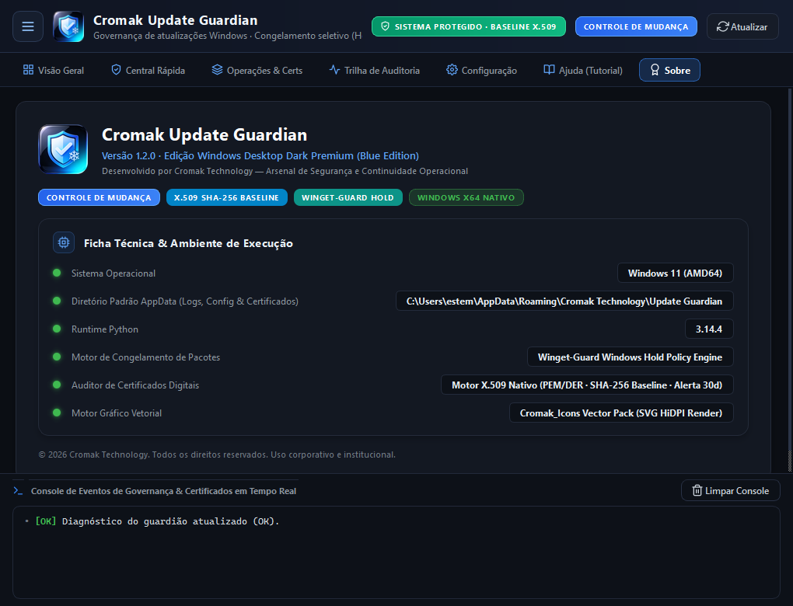

Cromak Update Guardian
Governança de Atualizações, Hold Seletivo e Blindagem X.509.
Versão: 1.0.0 (Build 2026.11)
Nunca mais tenha operações paralisadas por atualizações surpresa do Windows. O Cromak Update Guardian implementa políticas preventivas de Hold para travar drivers, runtimes legados (Java, OpenSSL, .NET) e pacotes de folha de pagamento, além de auditar continuamente a integridade da sua cadeia de certificados institucionais X.509.

Estabilidade operacional absoluta: controle quando e o que atualizar.
Em ambientes corporativos, clínicas, comércios e indústrias, uma única atualização não homologada do Windows pode desconfigurar impressoras fiscais, quebrar certificados digitais A1/A3 e inutilizar softwares ERP legados em plena segunda-feira de manhã.
O Update Guardian coloca o departamento de TI no comando definitivo: execute simulações (Dry-Run), aplique congelamentos em lote (Freeze), audite certificados contra baselines criptográficos SHA-256 e gere relatórios de conformidade com justificativas técnicas detalhadas para auditorias.
Os 4 Pilares da Governança de Atualizações
-
Hold Seletivo Preventivo & Freeze Global
Congele componentes individuais (ex:
folha-pagamento-core,openssl-win64) com justificativa técnica formal ou ative o Plano de Freeze para travar preventivamente todas as atualizações de risco do ecossistema Windows. -
Escudo & Verificação de Certificados X.509
Compara os hashes SHA-256 de todos os certificados TLS, servidores corporativos e cadeias de confiança ICP-Brasil contra baselines aprovados, alertando sobre revogações ou vencimentos iminentes.
-
Emissão e Renovação Local de Certificados
Gere certificados locais RSA-2048 assinados com SHA-256 para aplicações internas, com validade programável e inclusão automática no baseline monitorado do Windows.
-
Trilha SQLite & Relatórios de Conformidade
Registro histórico imutável de todas as decisões de retenção, liberação e verificação técnica, permitindo exportar relatórios consolidados em JSON para documentar a maturidade de TI da organização.
Explore a Interface
Clique nas imagens para expandir e conhecer os painéis de governança.

Dashboard & Visão Geral
Métricas em tempo real sobre pacotes sob Hold, integridade dos certificados X.509, status da governança e atalhos rápidos de controle.

Catálogo de Governança & Certificados
Controles para executar ciclos completos de governança, aplicar Freeze, auditar atualizações pendentes e importar certificados institucionais.

Ações Rápidas (Hold & Freeze)
Aplicação imediata de bloqueios seletivos por pacote ou componente, com inclusão de chamados e justificativas técnicas.

Trilha Forense SQLite
Histórico completo de auditoria com busca textual por pacotes, carimbo de data/hora e justificativa formal de cada intervenção.

Janelas de Manutenção & Políticas
Configuração de horários permitidos para atualização, políticas de restart e diretórios de backup seguro de certificados.

Ficha Técnica & Ativação PRO
Gerenciamento da licença corporativa, identificação do HWID e documentação técnica integrada.
Escolha a Licença Ideal para a sua Operação
Controle desde computadores individuais até matrizes com servidores locais.
Plano Grátis
- Auditoria de Atualizações Pendentes
- Verificação Básica de Certificados
- Limite de até 3 Pacotes em Hold
- Emissão de Certificados Bloqueada
- Sem Backup Automático de Certificados
- Sem Exportação de Relatórios JSON
Uso Pessoal PRO
- 1 Licença de Máquina (Vitalícia)
- Holds e Freezes Ilimitados
- Emissão de Certificados RSA-2048
- Baseline SHA-256 Automático
- Backup Datado de Certificados
- Trilha de Auditoria SQLite Completa
Corporativo (B2B)
- Pacote p/ até 5 Servidores/Estações
- Ou R$ 499 (Vitalício p/ 10 Máquinas)
- Exportação Consolidada de Relatórios
- Políticas Centralizadas de Governança
- Suporte Corporativo Prioritário B2B
- Ideal para Redes Comerciais e TI Gerenciada
Instaladores Multilíngues
O software detecta automaticamente o idioma do seu sistema operacional ou permite a troca instantânea na interface com tradução 100% nativa em 10 idiomas.
Requisitos do Sistema
Sistema Operacional
Windows 10 / 11 / Server (x64 Nativo)
Processador
Dual-Core (1.0 GHz ou superior)
Memória RAM
512 MB Livres (Operação leve em background)
Armazenamento
40 MB de espaço livre em disco
Privilégios
Administrador (Requerido para gerenciar políticas)
Idiomas Suportados
10 Idiomas Nativos
Português, English, Español, Français, Deutsch, Italiano, Русский, 简体中文, 日本語, 한국어Perguntas Frequentes
O Update Guardian desativa permanentemente o Windows Update?
Não. O diferencial do Update Guardian é a governança inteligente. Em vez de simplesmente quebrar ou desabilitar o serviço do Windows Update (o que deixaria o sistema sem correções críticas de segurança), ele implementa políticas seletivas de retenção (Hold), permitindo que patches seguros continuem sendo instalados enquanto componentes sensíveis permanecem congelados.
Como funciona a proteção de certificados X.509 e ICP-Brasil?
O aplicativo cria um baseline criptográfico baseado no hash SHA-256 dos certificados do seu repositório institucional. Sempre que houver uma alteração não autorizada, substituição de raiz de autoridade ou expiração próxima, o sistema alerta a equipe técnica e preserva um backup íntegro no cofre local.
Como remover os bloqueios temporariamente durante manutenções?
O software possui a função "Thaw Global" (Descongelamento Controlado), projetada exatamente para janelas de manutenção autorizadas. Ao acioná-la, todos os holds são pausados temporariamente e você pode reativá-los com 1 clique assim que as homologações forem concluídas.